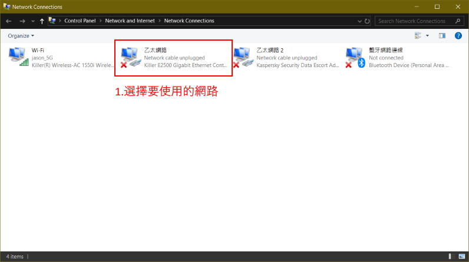
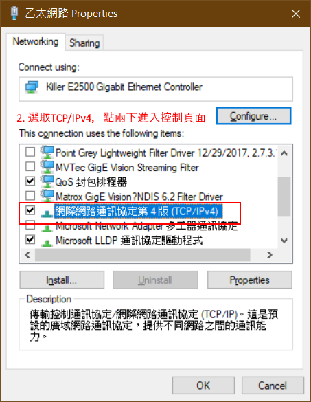
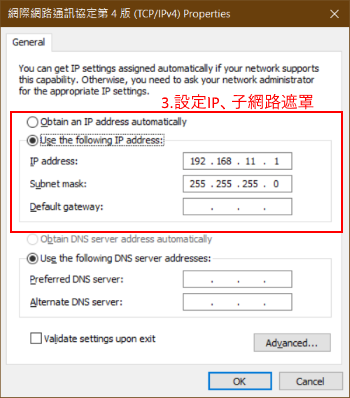

通訊介面設定
VAL控制器遠程控制採用RS232以及Ethernet,函式庫中將分別採用SerialPort、TcpClient建立通訊管道。使用遠程控制時請將控制器改為外部控制模式。
RS232通訊介面
Tip
適用型號VLP-4830-2S、VLP-4830-3S、VLP-2430-4、VLP-2460-4、VLP-2430-2、VLP-2430-3。
開啟裝置管理員，確認COM Port的狀況，確認系統有抓到通訊介面，並將控制器接上指定的Port，這樣就完成PC端的確認與設定。
SerialPort的初始化參數如下:
- Baud rate: 38400 bps
- Data bit length: 8 bits
- Parity bit: None
- Stop bits: 1 bit
Ethernet通訊介面
Tip
適用型號VLP-2430-2eN、VLP-2430-3eN、VLP-2430-4eN、VLP-2460-4eN。
Warning
目前只支援eN系列的控制器，並且使用控制器與PC直接連接，不透過路由器轉發
開啟網路介面卡設定，選擇要使用的介面卡，點兩下進入設定頁面。 
對網路介面按下右鍵->內容，選取網際網路通訊第4版(TCP/IPv4)並按下內容，將以下資訊輸入到IP設定欄位。

這樣就完成PC端的確認與設定。
TcpClient的初始化參數如下:
- IP: 192.168.11.20
- Port: 1000
Warning
出廠時預設連接IP:192.168.11.20:1000，若改過IP請務必記下新的IP位置，目前沒有任何方式可以查詢控制器的IP，若真的無法確認IP可以在IP:192.168.11.0~255:1000進行掃描，既使改變IP前三組數字仍維持不變。